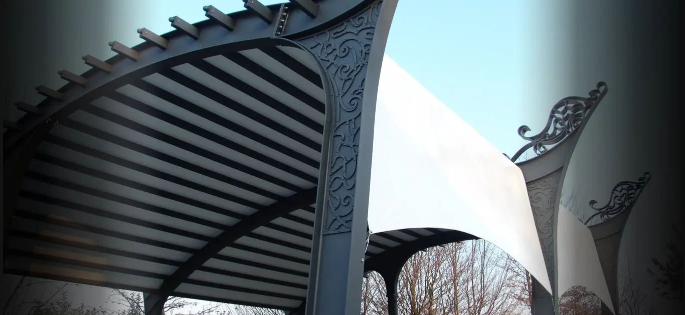
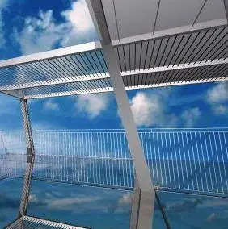
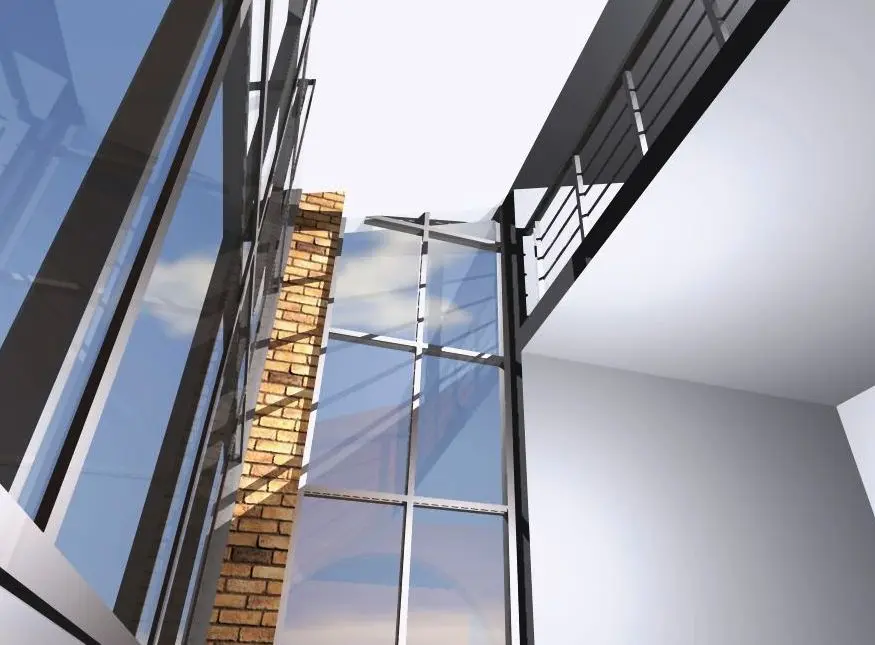
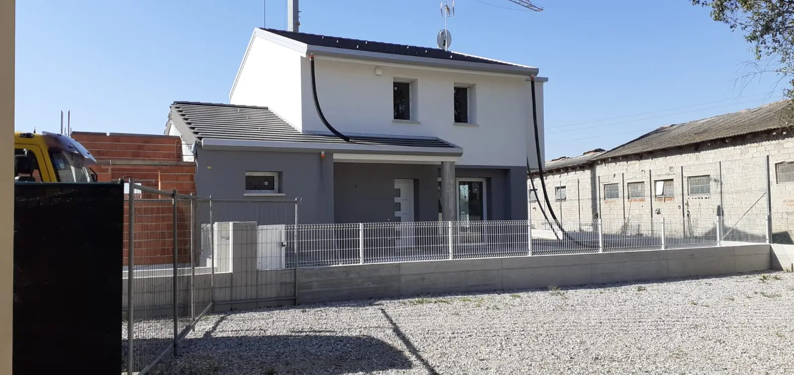
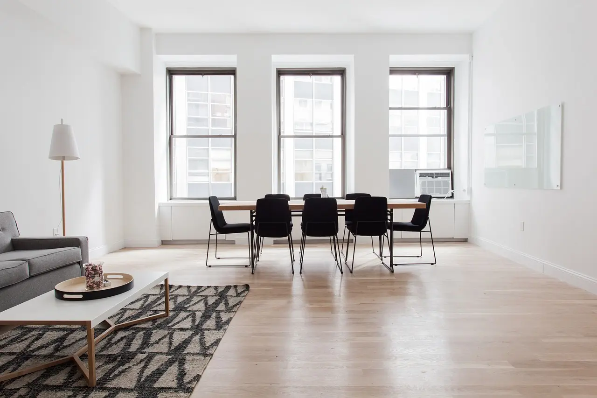
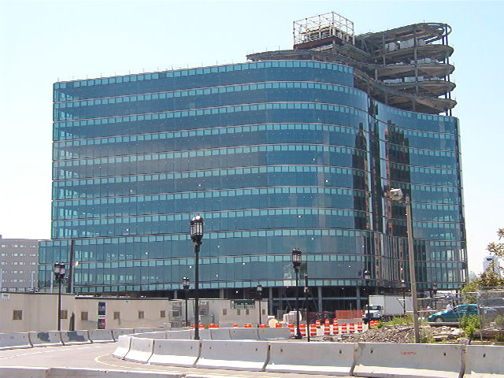
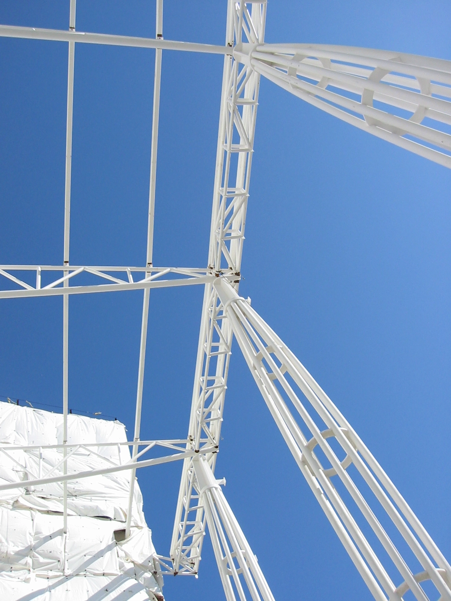
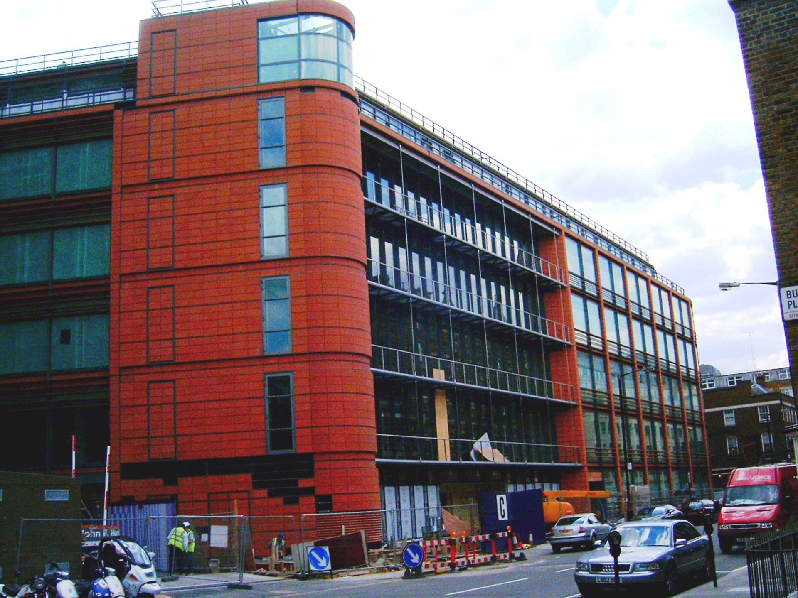
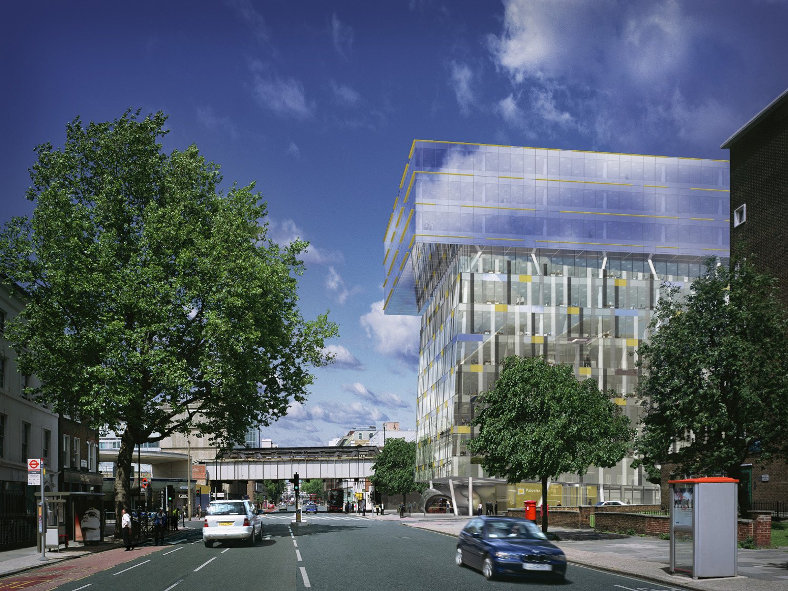

Progetti
Selezionati
Una raccolta di interventi che documentano vent'anni di architettura, interior design, riqualificazione energetica e progettazione di spazi interni ed esterni nel Veneto e oltre confine.
Galleria dei Lavori
Filtra per categoria o scorri l'intera galleria.

Facciata Continua
Architettura · Veneto
Interior Design Abitativo
Residenziale · Padova
Architettura Sostenibile
Efficienza Energetica
Intervento Edilizio
Edilizia Civile · Veneto
Cancelleria su Misura
Metallo · Esterno
Residenza Privata
Interior Design · Padova
Living Open Space
Residenziale
Giardino d'Inverno
Verde Architettonico
Edilizia Civile
Veneto
Riqualificazione Energetica
Superbonus · Veneto
Studio Professionale
Interior Design
Involucro Edilizio
Rivestimento EsternoEsperienze Internazionali
Collaborazioni con studi internazionali che hanno arricchito la visione progettuale con metodologie e scale differenti.

Manulife Financial — Toronto
Canada · Complesso direzionale

Manulife Centre — Dettaglio
Canada · Architettura commerciale

Fessoglen Residence
Nord America · Residenziale di lusso

Southpoint Fitness & Wellness
Nord America · Impianto sportivo
Trasformazioni
Confronta lo stato di fatto e il risultato finale di alcune ristrutturazioni e interventi di interior design.
Prima
Dopo
Prima
Dopo
Trascina il cursore sull'immagine per vedere il confronto.
Hai un progetto
in mente?
Raccontami la tua idea. Valutiamo insieme come realizzarla al meglio, nel rispetto del budget e dei tempi.
Parliamone